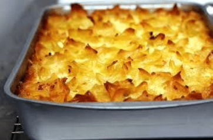

"The first kugels were made from bread and flour and were savory rather than sweet. About 800 years ago when, Jewish cooks in Germany replaced bread mixtures with lokshen noodles or farfel.[5] Eventually eggs were incorporated"(Wikipedia.org). From there the recipe has been adapted hundreds of times throughout many cultures. Kugel's are made with cinnamon, raisins, and other random ingrediants, for they were adapted to be that way throughout the 800 years the dish has been around.
Kugel has been in my family since before my great-great-grandma Mary, who was born in the 1888. Kugel is a traditional Jewish dish, that if made right tastes delicous! (Most recipies online are terrible). The recipe has been passed down through my family from generation to generation. My mom makes it for hannukah, passover, rosh hashanah, and for some other special events. This dish means a lot to me since it has so much history.
Ann, (2022, November 6th). Kugel.https://www.allrecipes.com/recipe/25228/kugel/